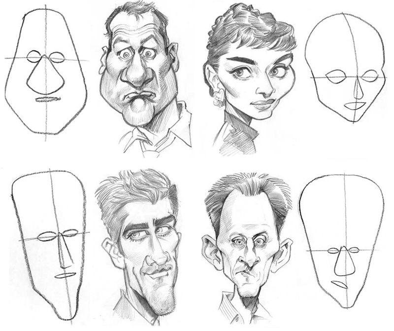

Os cursos de desenho oferecidos pela
ArtProfigy
destacam-se pela sua abordagem abrangente e focada no desenvolvimento das habilidades artísticas dos alunos.
Com uma ênfase na técnica e na criatividade, os programas são projetados para atender tanto iniciantes quanto
artistas mais experientes em seu caminho de aprimoramento.
A ArtProfigy não apenas ensina as fundamentais técnicas de desenho,
mas também encoraja a expressão individual e a exploração de estilos diversos, preparando os alunos para enfrentar
desafios artísticos com confiança e inovação.
a
a
a
.
Além disso, os cursos da ArtProfigy
são conduzidos por instrutores experientes e apaixonados,
muitos dos quais são artistas profissionais ativos na indústria. Isso não só garante um ensino de alta
qualidade, mas também proporciona aos alunos uma visão prática do mundo artístico contemporâneo.
Com um currículo que equilibra teoria e prática, os cursos da ArtProfigy
são um investimento valioso para aqueles que buscam aprimorar suas habilidades artísticas de maneira
significativa e sustentável.
a
a
a
Curso de Mangá
O mangá, estilo de quadrinhos originário do Japão, tem raízes que remontam ao século 12, com ilustrações encontradas em rolos de papel. No entanto, sua forma moderna começou a se desenvolver após a Segunda Guerra Mundial, influenciada por artistas como Osamu Tezuka, conhecido como o "pai do mangá moderno". Mangás abrangem uma ampla variedade de gêneros, desde ação e aventura até romance e ficção científica, e são caracterizados por seu estilo artístico único e narrativa visual dinâmica. Eles são lidos de trás para frente, em consonância com a escrita japonesa, e têm conquistado um público global, resultando em adaptações para animes e filmes. Hoje, o mangá é uma importante forma de expressão cultural e entretenimento,refletindo as complexidades e diversidades da sociedade japonesa.
Desenvolvimento de personagens principais e secundários
Personalidade e arquétipos em personagens de mangá
Criando designs únicos e memoráveis
Prática: Criando um elenco diversificado
Layout de página e composição visual
Uso de quadros e sequências narrativas
Criando atmosfera e ritmo na história
Narrativa visual avançada
Criando ambientes autênticos em mangá
Uso de perspectiva e profundidade
Design de cenários urbanos e naturais
Pequenos Detalhes em cenários complexos
Sombreamento em estilo manga
Luz e sombra para efeitos dramáticos
Uso de texturas e padrões
Sombras em diferentes materiais
Introdução à coloração digital em mangá
Técnicas de pintura e efeitos especiais
Uso de camadas e ferramentas de software
Prática: Colorindo um desenho completo
Preparação de páginas para publicação
Formatos e requisitos editoriais
Auto-publicação e webcomics
Criando um portfolio online
Panorama do mercado de mangá
Oportunidades para artistas de mangá
Networking e promoção pessoal
Planejando uma carreira como mangaká
Desenvolvimento de um projeto completo de mangá
Revisão e feedback construtivo
Refinamento técnico e criativo
Prática: Apresentando o projeto final
Esses módulos detalhados fornecerão uma base sólida para qualquer pessoa interessada em aprender a criar mangás, cobrindo desde os fundamentos do desenho até a publicação final.
Conheça o Professor
O curso será ministrado por Kenji Yamamoto, um renomado professor de mangá com mais de 15 anos de experiência na indústria. Kenji é formado pela Tokyo University of the Arts onde se especializou em Artes Visuais e Técnicas de Ilustração. Ele é conhecido por seu domínio impecável de anatomia, perspectiva e narrativa visual. Com sua expertise, Kenji está pronto para compartilhar seus conhecimentos e guiar você na jornada de se tornar um mestre na criação de mangás. Venha aprender com um dos melhores e transforme suas habilidades artísticas!
Matrícula Curso de Mangá
Faça sua inscrição para o curso
R$ 1.618,00
12x de R$ 134,83 no cartão
24x de R$ 67,42 no boleto
Garantimos seu dinheiro de volta por até 7 dias
Curso de Pintura
A arte da pintura, uma das formas mais antigas de expressão visual,
tem uma história rica que remonta milênios. Desde as primeiras pinturas rupestres encontradas em cavernas até
os movimentos artísticos contemporâneos, como o impressionismo e o expressionismo, a pintura tem evoluído como
uma poderosa ferramenta para capturar a essência da humanidade e do mundo ao nosso redor.Através das pinceladas
de mestres como Leonardo da Vinci, Vincent van Gogh e Frida Kahlo, a pintura transcendeu simples representações
visuais para se tornar um meio de explorar emoções profundas e perspectivas filosóficas.
Esses módulos detalhados fornecerão uma base sólida para qualquer pessoa interessada em aprender sobre pintura, cobrindo desde os fundamentos do desenho até o avançado.
Conheça a Professora
O curso será ministrado por Maria Oliveira,
uma renomada professora de pintura com mais de 20 anos de experiência na indústria.
Maria é formada pela Universidade de Faculdade de Belas Artes de São Paulo (FAAP), onde se especializou em
Pintura e Técnicas de Arte Contemporânea. Ela é conhecida por seu domínio impecável de cores,
texturas e composição. Com sua vasta experiência e paixão pela arte, Maria está pronta para
compartilhar seus conhecimentos e guiar você na jornada de se tornar um mestre na pintura.
Venha aprender com uma das melhores e transforme suas habilidades artísticas!
Matrícula Curso de Pintura
Faça sua inscrição para o curso
R$ 1.800,50
12x de R$ 150,04 no cartão
24x de R$ 75,02 no boleto
Garantimos seu dinheiro de volta por até 7 dias
Curso de Realismo
O realismo, um movimento artístico
que começou no século XIX, buscava representar o mundo de maneira
precisa e detalhada, sem idealizações. Este estilo focava em retratar a vida cotidiana e a natureza
com fidelidade, sendo uma resposta ao romantismo que dominava a época. Artistas como
Gustave Courbet e Jean-François Millet foram pioneiros nesse movimento, destacando a beleza e a
complexidade do mundo real através de suas obras. No desenho,
o realismo exige uma observação minuciosa e uma técnica apurada
para capturar cada detalhe e nuance das formas e texturas.
Esses módulos detalhados fornecerão uma base sólida para qualquer pessoa interessada em aprender sobre o realismo, cobrindo desde os fundamentos do desenho até técnicas avançadas.
Conheça o Professor
O curso será conduzido por David Santos, um artista de renome com mais de 8 anos de experiência na área.
David é graduado pela Escola de Belas Artes da Universidade Federal do Rio de Janeiro, onde se especializou em
Desenho Realista e Técnicas Clássicas de Arte. Ele é amplamente reconhecido por sua precisão em detalhes,
proporções exatas e técnicas avançadas de sombreamento. Com sua extensa experiência e paixão pelo realismo, João está pronto para
compartilhar seus conhecimentos e guiar você na sua jornada para se tornar um mestre no desenho realista.
Aproveite a oportunidade de aprender com um dos melhores e transforme suas habilidades artísticas!
Matrícula Curso de Realismo
Faça sua inscrição para o curso
R$ 1.600,20
12x de R$ 133,35 no cartão
24x de R$ 66,68 no boleto
Garantimos seu dinheiro de volta por até 7 dias
Curso de Design de Interiores
O design de interiores
é uma disciplina que combina arte, arquitetura e engenharia
para criar ambientes funcionais e esteticamente
agradáveis. Esta área foca em otimizar espaços, utilizando cores, móveis e decorações para refletir o estilo e
as necessidades dos ocupantes. Profissionais como Kelly Wearstler e Philippe Starck
são reconhecidos por suas contribuições inovadoras ao design de interiores, criando espaços que são tanto práticos
quanto inspiradores. No design de interiores, a atenção aos detalhes e a compreensão das necessidades dos
clientes são essenciais para criar ambientes harmoniosos e eficientes.
Esses módulos detalhados fornecerão uma base sólida para qualquer pessoa interessada em aprender sobre design de interiores, cobrindo desde os fundamentos do design até técnicas avançadas.
Conheça a Professora
Este curso será ministrado pela renomada designer de interiores francesa Marie Dupont, que tem mais de 24 anos de experiência no ensino e prática do design de interiores.
Formada na prestigiada École nationale supérieure des arts décoratifs, ENSAD , Marie trouxe seu talento e expertise para o Brasil, onde tem influenciado o design de interiores com seu estilo elegante e técnicas inovadoras.
Ela está pronta para compartilhar seus conhecimentos e ajudar você a alcançar um novo nível no design de interiores.
Matrícula Curso de Design de Interiores
Faça sua inscrição para o curso
R$ 2.100,00
12x de R$ 175,00 no cartão
24x de R$ 87,50 no boleto
Garantimos seu dinheiro de volta por até 7 dias
Curso de Animação
A animação
é uma arte que combina criatividade, tecnologia e narrativa
para dar vida a personagens e histórias através do movimento.
Desde os primeiros desenhos animados até as modernas produções em 3D, a animação evoluiu significativamente.
Pioneiros como Walt Disney e Hayao Miyazaki transformaram
o mundo da animação com suas obras inovadoras, criando clássicos que continuam a inspirar gerações.
No campo da animação, a atenção aos detalhes, a compreensão da física do movimento e a capacidade de contar
uma história visualmente são essenciais para criar obras cativantes e memoráveis.
Esses módulos detalhados fornecerão uma base sólida para qualquer pessoa interessada em aprender sobre animação, cobrindo desde os fundamentos até técnicas avançadas.
Conheça o Professor
Este curso será ministrado pelo renomado animador brasileiro Paulo Ribeiro, que tem mais de 12 anos de experiência no ensino e prática da animação.
Formado na prestigiada Faculdade de Belas Artes de São Paulo (FAAP), Paulo trouxe seu talento e expertise para o mundo da animação, influenciando com suas técnicas inovadoras e criativas.
Ele está pronto para compartilhar seus conhecimentos e ajudar você a alcançar um novo nível na animação.
Matrícula Curso de Animação
Faça sua inscrição para o curso
R$ 2.000,00
R$ 1.480,80
12x de R$ 123,40 no cartão
24x de R$ 61,70 no boleto
Garantimos seu dinheiro de volta por até 7 dias
Curso de Modelagem 3D
A modelagem 3D
é uma técnica fundamental na criação de mundos virtuais, personagens, e objetos detalhados em três
dimensões. Desde sua origem nos anos 70 com software pioneiro como o
Sketchpad, a modelagem 3D evoluiu significativamente, transformando-se em uma ferramenta
essencial em diversas indústrias, como cinema, jogos, arquitetura e design.
Visionários como Ed Catmull e John Lasseter
foram influentes na popularização e inovação da modelagem 3D, com suas contribuições revolucionando
a forma como visualizamos e criamos arte digital. A atenção aos detalhes, a compreensão da geometria
e texturização, e a capacidade de dar vida a modelos tridimensionais são essenciais para criar obras
impactantes e realistas.
Esses módulos detalhados fornecerão uma base sólida para qualquer pessoa interessada em aprender sobre modelagem 3D, cobrindo desde os fundamentos da geometria até técnicas avançadas de renderização.
Conheça a Professora
Este curso será ministrado pela renomada modeladora 3D brasileira Amelia Souza, que tem mais de 15 anos de experiência no ensino e prática da modelagem 3D.
Formada na prestigiada School of Visual Arts (SVA) em Nova York, Amelia trouxe seu talento e expertise para o mundo da modelagem 3D, influenciando com suas técnicas inovadoras e criativas.
Ela está pronta para compartilhar seus conhecimentos e ajudar você a alcançar um novo nível na modelagem 3D.
Matrícula Curso de Modelagem 3D
Faça sua inscrição para o curso
R$ 1.990,00
12x de R$ 165,83 no cartão
24x de R$ 82,92 no boleto
Garantimos seu dinheiro de volta por até 7 dias
Curso de Cartoon
O cartoon
é uma forma de arte visual que usa imagens simples e expressivas para contar histórias,
transmitir mensagens ou provocar risos. Desde os primeiros quadrinhos e tiras em jornais até
as animações televisivas e filmes, o cartoon evoluiu de forma significativa.
Pioneiros como Walt Disney e Tex Avery
transformaram o mundo dos cartoons com suas criações inovadoras,
desenvolvendo personagens e histórias que continuam a encantar e inspirar gerações.
A arte do cartoon requer uma compreensão profunda do desenho, da narrativa visual
e da expressão dos personagens para criar obras que sejam tanto envolventes quanto memoráveis.
Esses módulos detalhados fornecerão uma base sólida para qualquer pessoa interessada em aprender sobre cartoons, cobrindo desde os fundamentos do desenho até técnicas avançadas.
Conheça a Professora
Este curso será ministrado pela renomada designer gráfica brasileira Ji-hyun Kim, que tem mais de 33 anos de experiência no ensino e prática do design gráfico.
Formada na prestigiada Seoul National University, Ji-hyun trouxe seu talento e expertise para o mundo do design, influenciando com suas técnicas inovadoras e criativas.
Ela está pronta para compartilhar seus conhecimentos e ajudar você a alcançar um novo nível no design gráfico.
Matrícula Curso de Cartoon
Faça sua inscrição para o curso
R$ 2.000,00
12x de R$ 166,67 no cartão
24x de R$ 83,33 no boleto
Garantimos seu dinheiro de volta por até 7 dias
Curso de Caricatura

A caricatura
é uma forma de arte que exagera ou distorce as características físicas de uma pessoa,
geralmente para criar um efeito humorístico ou satírico. Esta arte tem suas raízes no Renascimento,
com artistas como Leonardo da Vinci que exploravam a deformação de
traços humanos em seus esboços. Ao longo dos séculos, a caricatura evoluiu e ganhou popularidade em
jornais e revistas, com artistas como Honoré Daumier e
Thomas Nast desempenhando papéis fundamentais em sua disseminação.
Hoje, a caricatura continua a ser uma ferramenta poderosa para crítica social e política,
além de ser uma forma divertida de retratar pessoas.
Esses módulos detalhados fornecerão uma base sólida para qualquer pessoa interessada em aprender sobre caricatura, cobrindo desde os fundamentos até técnicas avançadas.
Conheça o Professor
Este curso será ministrado pelo talentoso caricaturista brasileiro Tiago dos Santos Guimarães, que tem mais de 5 anos de experiência no ensino e prática da caricatura.
Formado na prestigiada Escola de Belas Artes da Universidade Federal do Rio de Janeiro (EBA-UFRJ), Tiago trouxe seu talento e expertise para o mundo da caricatura, influenciando com suas técnicas inovadoras e criativas.
Ele está pronto para compartilhar seus conhecimentos e ajudar você a alcançar um novo nível na arte da caricatura.
Os cursos oferecidos pela ArtProdigy
destacam-se por sua abordagem completa e
adaptada às necessidades dos alunos.
Cada curso é dividido em 10 módulos,
nos quais a teoria é apresentada por meio de vídeos online que podem ser
acessados a qualquer momento, oferecendo flexibilidade total para os estudantes.
Com acesso vitalício, os alunos podem revisar o conteúdo sempre que necessário.
Além das aulas teóricas, há atividades práticas onde o professor analisa e
orienta os alunos, destacando áreas que precisam de melhorias. Ao final de cada módulo,
os alunos enfrentam uma prova que pode ser prática ou teórica, dependendo do módulo,
para garantir a progressão adequada no curso.
a
a
a
Dentro dos módulos, os alunos têm acesso a diversos materiais de apoio, como PDFs, vídeos e, se
necessário, podem agendar chamadas de vídeo com o professor para tirar dúvidas ou enviar mensagens
para esclarecimentos adicionais. Este suporte contínuo garante que os alunos recebam a
atenção necessária para seu desenvolvimento. Ao final do curso, há uma revisão final
abrangente e a entrega do certificado, comprovando a conclusão e o aprendizado adquirido.
A estrutura dos cursos da ArtProdigy, com um equilíbrio entre teoria e prática e um
suporte constante dos professores, proporciona uma experiência de aprendizado eficaz e
enriquecedora para todos os alunos.